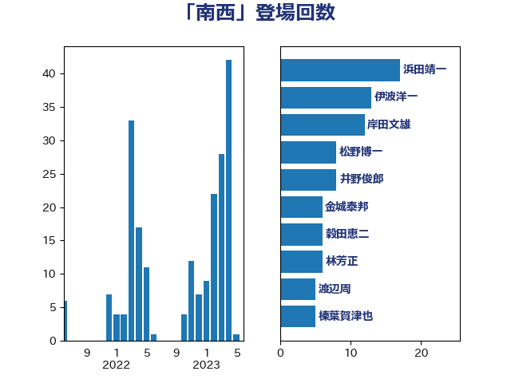

単語「南西」

| 浜田靖一 | 自由民主党 | 17 回 |
| 伊波洋一 | 無所属 | 13 回 |
| 岸田文雄 | 自由民主党 | 12 回 |
| 松野博一 | 自由民主党 | 8 回 |
| 井野俊郎 | 自由民主党 | 8 回 |
| 金城泰邦 | 公明党 | 6 回 |
| 穀田恵二 | 日本共産党 | 6 回 |
| 林芳正 | 自由民主党 | 6 回 |
| 渡辺周 | 立憲民主党 | 5 回 |
| 榛葉賀津也 | 国民民主党 | 5 回 |
| 秋葉賢也 | 自由民主党 | 4 回 |
| 柴田巧 | 日本維新の会 | 4 回 |
| 鬼木誠 | 立憲民主党 | 3 回 |
| 赤嶺政賢 | 日本共産党 | 3 回 |
| 木村次郎 | 自由民主党 | 3 回 |
| 小野田紀美 | 自由民主党 | 3 回 |
| 高木啓 | 自由民主党 | 2 回 |
| 高市早苗 | 自由民主党 | 2 回 |
| 武井俊輔 | 自由民主党 | 2 回 |
| 本田太郎 | 自由民主党 | 2 回 |
| 新垣邦男 | 立憲民主党 | 2 回 |
| 岩本剛人 | 自由民主党 | 2 回 |
| 小池晃 | 日本共産党 | 2 回 |
| 高良鉄美 | 無所属 | 1 回 |
| 馬淵澄夫 | 立憲民主党 | 1 回 |
| 阿達雅志 | 自由民主党 | 1 回 |
| 長友慎治 | 国民民主党 | 1 回 |
| 野田佳彦 | 立憲民主党 | 1 回 |
| 野上浩太郎 | 自由民主党 | 1 回 |
| 辻元清美 | 立憲民主党 | 1 回 |
| 藤田文武 | 日本維新の会 | 1 回 |
| 羽田次郎 | 立憲民主党 | 1 回 |
| 磯崎仁彦 | 自由民主党 | 1 回 |
| 田村貴昭 | 日本共産党 | 1 回 |
| 熊田裕通 | 自由民主党 | 1 回 |
| 浜口誠 | 国民民主党 | 1 回 |
| 浅川義治 | 日本維新の会 | 1 回 |
| 杉尾秀哉 | 立憲民主党 | 1 回 |
| 掘井健智 | 日本維新の会 | 1 回 |
| 志位和夫 | 日本共産党 | 1 回 |
| 山添拓 | 日本共産党 | 1 回 |
| 小沢雅仁 | 立憲民主党 | 1 回 |
| 宮本徹 | 日本共産党 | 1 回 |
| 太栄志 | 立憲民主党 | 1 回 |
| 堀井巌 | 自由民主党 | 1 回 |
| 國場幸之助 | 自由民主党 | 1 回 |
| 和田有一朗 | 日本維新の会 | 1 回 |
| 中川郁子 | 自由民主党 | 1 回 |